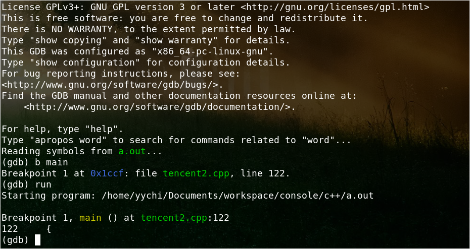

GDB 基本用法

Contents
废话以后有时间再加。
首先编译时开启调试选项：
|
|
-O0指定编译器的优化级别为0，即不优化。
然后编译出来的可执行文件，默认名字是a.out. 直接了当，用gdb打开之，
|
|
要调试必然要打断点，两种方式：指定行数；指定函数。
|
|
使用list在gdb中查看代码块以确定你要在哪一行设置断点（这就很麻烦，所以一般直接在main函数打个断点，然后单步去run）。
设好断点以后，使用run启动程序，程序会在断点处停顿，等待你的输入指令。

使用next进行单步执行，使用step步入。所谓步入就是如果有函数调用，程序会跟踪到所调用的函数内部的代码，而单步的话，则会直接完成函数调用，获得返回值（如果有的话）。
使用info locals查看栈变量的值，使用info args查看函数传入参数的值。使用print <variable>查看指定变量的值。
备注
- GDB里面的命令都有缩写（break=b, next=n, step=s, ...）
- 什么命令也不敲直接回车默认执行上一条命令
- 使用
help <command>来获取相关命令的使用帮助